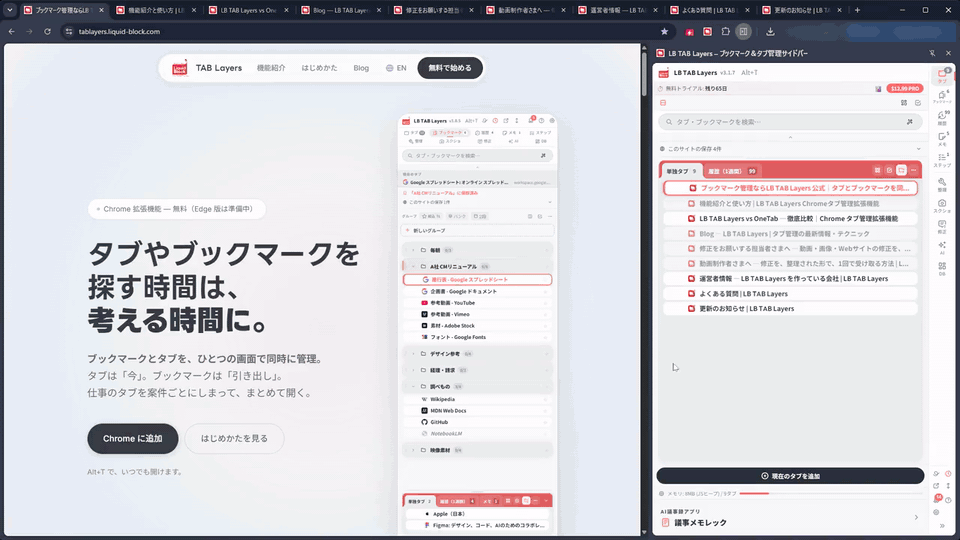
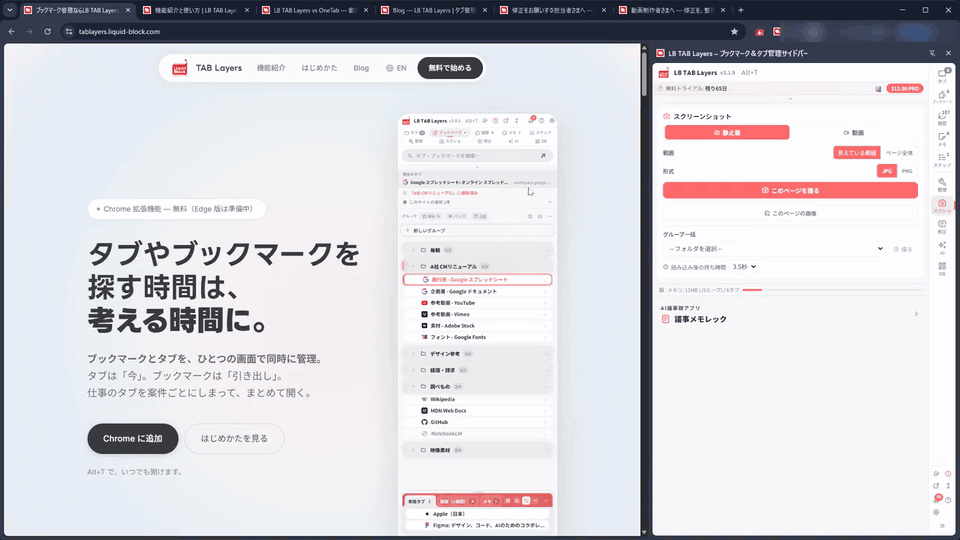
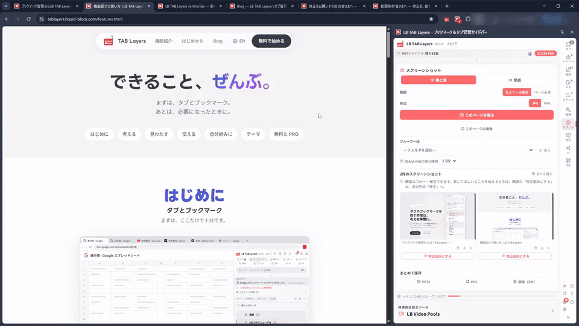
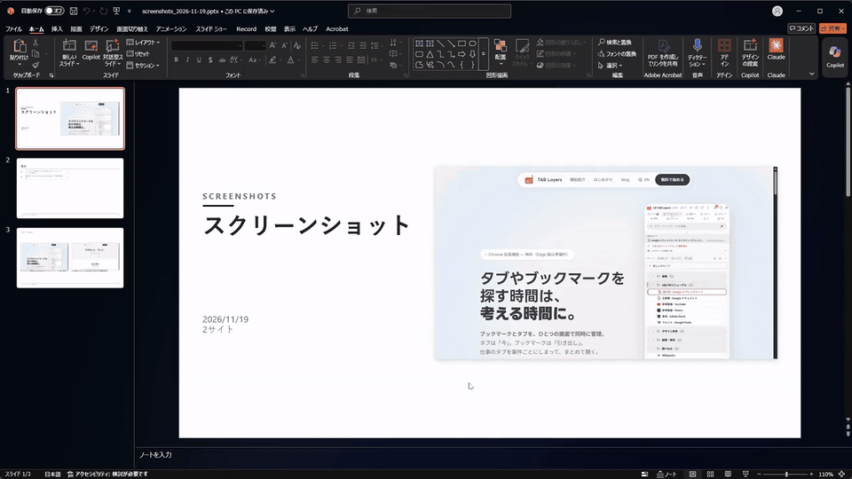
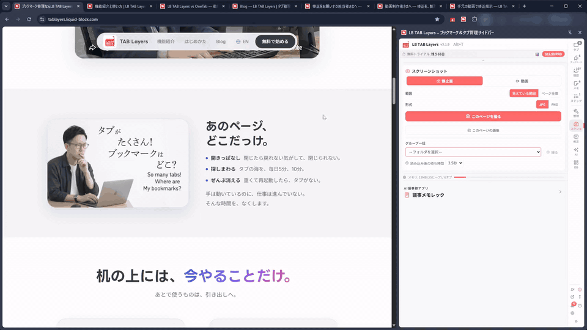
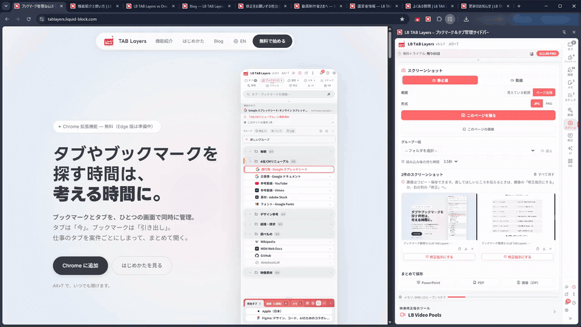
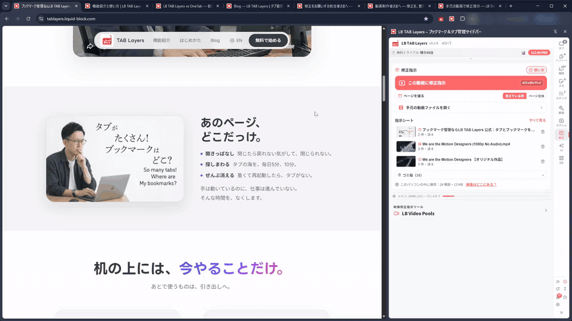
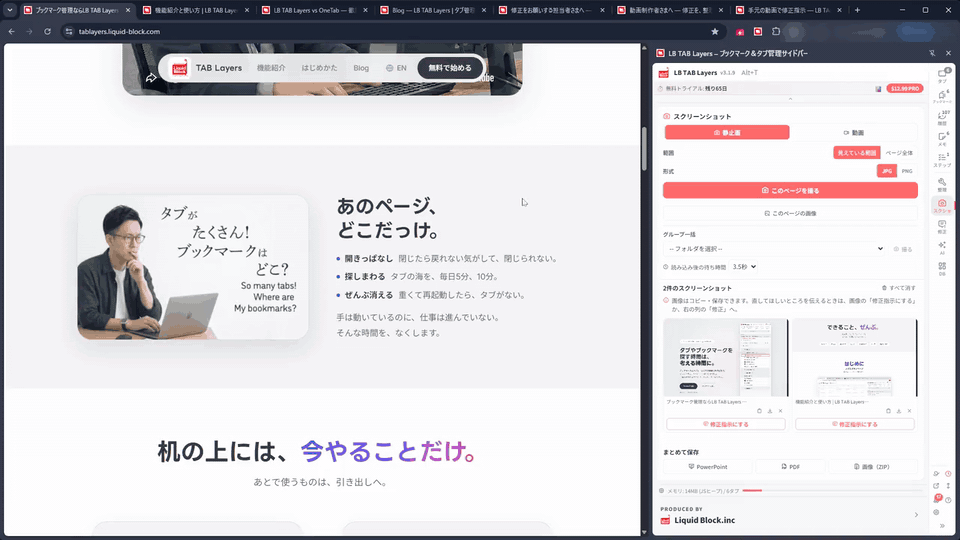

このページを撮る
見えている範囲、または、ページ全体を 1 枚に撮る。JPG・PNG
場所：「スクショ」
右の列の「スクショ」で、撮影の画面になります。「見えている範囲」と「ページ全体」、JPG と PNG を選んで、「このページを撮る」を押します。撮った画像は、次に開いたときも残っています。




見えている範囲、または、ページ全体を 1 枚に撮る。JPG・PNG
場所：「スクショ」
右の列の「スクショ」で、撮影の画面になります。「見えている範囲」と「ページ全体」、JPG と PNG を選んで、「このページを撮る」を押します。撮った画像は、次に開いたときも残っています。




グループのページを順に開いて、全部撮る
場所：「スクショ」› グループ一括
グループを選んで「撮る」を押すと、そのグループのページを順に開いて、1 枚ずつ撮ります。読み込みのあとの待ち時間を 1〜5 秒から選べます。

コピー・保存・削除。次に開いても残っている
場所：撮った絵の下
撮った画像ごとに、コピー（画像として）・保存・削除ができます。「すべて消す」で、まとめて消します。
撮った絵に、番号ピンで指示を書く
場所：撮った絵の「修正指示にする」
撮った画像の「修正指示にする」で、書き込みの画面が開きます。書いた内容は、ページの指示シートに入ります。PRO の機能です（お試し期間中は使えます）。

PowerPoint（並べかた 5 種）・PDF・ZIP
場所：「まとめて保存」
撮った画像は、「まとめて保存」から、PowerPoint・PDF・ZIP で保存できます。PowerPoint は、1 枚ずつ・2 枚並びなど、5 つの並べかたから選べます。PRO の機能です（お試し期間中は使えます）。
ページを自動で送りながら録る。自分の操作を録る（10 分まで）
場所：「スクショ」›「動画」
「動画」に切り替えると、ページを自動で送りながら録る（自動スクロール）か、自分の操作を録る（10 分まで）かを選べます。録った動画は、MP4 で保存できます。
画像の、元の大きさと表示の大きさを出す
場所：画像の右クリック
画像を右クリックして「画像のサイズを見る」を選ぶと、元の大きさ・表示の大きさ・形式が出ます。押すと、大きさをコピーします。PRO の機能です。

ページの画像を並べ、大きさでしぼって、選んで保存
場所：「このページの画像」
「このページの画像」で、ページの画像を一覧にします。大きさ・種類でしぼって、選んだ画像をまとめて保存できます。PRO の機能です。

LB TAB Layers は、Chrome に無料で追加できます。入れたら、Alt+T で、いつでも開けます。
Chrome に無料で追加